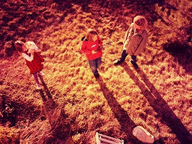

Recovered weblog entry
Long Shadows

Before the storm came on today, the angles of light reminded us of just how little time we have left before the solstice.
Developed in SwankoLab for iPhone using Vinny's BL94, Grizzle Fix, and Flamoz Fixer